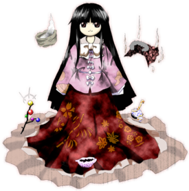

A trajetória de Kaguya é marcada por rebeldia, exílio e imortalidade:
🌙 A Vida na Capital Lunar – Kaguya era uma das princesas da nobreza da Capital Lunar, uma sociedade de seres puros.
O maior crime – ela ordenou a criação do Elixir de Hourai e o consumiu, tornando-se imortal.
A impureza – aos olhos dos lunares, desafiar o ciclo natural da vida e da morte a tornou um ser impuro.
Como punição por seu pecado, ela foi banida para o mundo dos humanos, onde foi acolhida por um cortador de bambu.
🎋 O Exílio na Terra e os Pedidos Impossíveis
Sua beleza extraordinária logo atraiu pretendentes de toda a nobreza:
Criou os "Cinco Pedidos Impossíveis" para afastar os homens que a cortejavam
Humilhou os nobres ao exigir tesouros lendários que ninguém conseguia encontrar
Despertou o ódio eterno de Fujiwara no Mokou, filha de um dos nobres rejeitados
Mokou eventualmente também tomou o elixir, iniciando uma rivalidade violenta que dura até hoje.
🌲 A Fuga para a Floresta dos Bambus
Quando o tempo de sua punição acabou, a Lua enviou emissários para resgatá-la:
Kaguya não queria voltar e decidiu fugir
Eirin Yagokoro traiu a Capital Lunar para protegê-la e ajudá-la na fuga
Juntas, elas se esconderam na densa Floresta dos Bambus do mundo humano
Para garantir a segurança, Eirin isolou a mansão de Eientei do fluxo do tempo exterior.
⛩️ O Refúgio em Gensokyo
Após séculos de isolamento, a barreira de sua mansão acabou se conectando a Gensokyo:
Encontrou o lugar perfeito para viver sem as pressões de seu passado real
Decidiu abrir as portas de Eientei e interagir com os habitantes do local
Hoje, vive sua eternidade focada em jogos, lazer e em provocar sua rival Mokou.
Ela prefere essa vida pacata no refúgio dos monstros do que qualquer luxo que a Capital Lunar pudesse oferecer.

Espécie:Lunarian
Título:Princesa Eterna da Lua(Eternal Moon Princess)